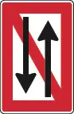
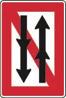
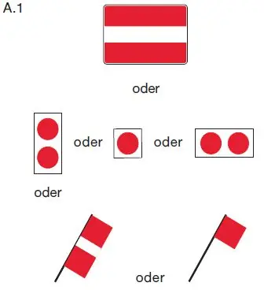
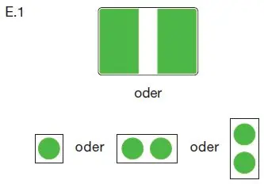
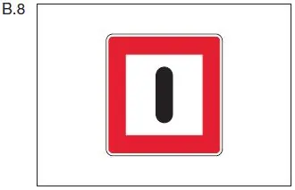

§ 6.08 Durch Schifffahrtszeichen verbotenes Begegnen
Binnenschifffahrtsstraßen-Ordnung
1. Auf einer Strecke, deren Beginn durch das Tafelzeichen A.4 oder A.4.1 (Anlage 7) gekennzeichnet ist, ist das Begegnen und Überholen verboten. | A.4 |  |
A.4.1 |  | |
Das Verbot nach Satz 1 kann auf Fahrzeuge und Verbände ab einer bestimmten Länge oder Breite beschränkt werden; in diesem Fall werden die Länge oder Breite auf einer rechteckigen weißen zusätzlichen Tafel angegeben, die unterhalb des Tafelzeichens A.4 oder A.4.1 angebracht ist. Für eine nach Satz 1 gekennzeichnete Strecke gelten im Übrigen die Regelungen des § 6.07 Nummer 1 entsprechend. | ||
2. Wenn die zuständige Behörde auf einer bestimmten Strecke das Begegnen dadurch ausschließt, dass sie die Durchfahrt jeweils nur in einer Richtung gestattet, bedeutet: a) ein allgemeines Zeichen A.1 (Anlage 7): keine Durchfahrt; |  |
b) ein allgemeines Zeichen E.1 (Anlage 7):
Durchfahrt frei. |  |
Je nach den örtlichen Umständen kann das Zeichen, das die Durchfahrt verbietet, durch das als Vorwarnzeichen verwendete Tafelzeichen B.8 (Anlage 7) angekündigt werden. |  |